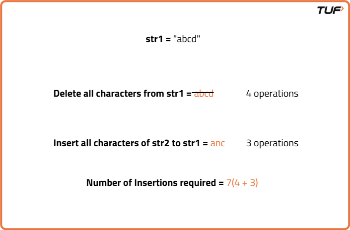
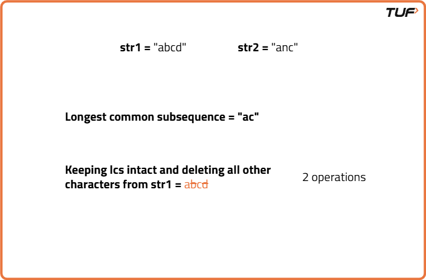
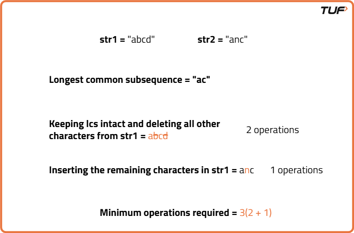

Minimum Insertions/Deletions to Convert String | (DP- 30)
Problem Statement: We are given two strings, str1 and str2. We are allowed the following operations:
1. Delete any number of characters from string str1.
2. Insert any number of characters in string str1.
Return the minimum number of operations required to convert str1 to str2.
Pre-requisite: Longest Common Subsequence
Examples
Input: str1 = "kitten", str2 = "sitting" Output: 5 Explanation: To transform "kitten" to "sitting", delete "k" and insert "s" to get "sitten", then delete 'e' and insert "i" to get "sittin", and insert "g" at the end to get "sitting". Input : str1 = "flaw", str2 = "lawn" Output: 2 Explanation : To transform "flaw" to "lawn", delete "f" and insert "n" at the end. Hence minimum number of operations required is 2".
Disclaimer: Here is the practice link to help you assess your knowledge better. It's highly recommend trying to solve it before looking at the solution.
Tabulation Approach
Algorithm
We need to find the minimum operations required to convert string str1 to str2. Let us keep the 'minimum' criteria aside and think, what maximum operations will be required for this conversion?
The easiest way is to remove all the characters of str1 and then insert all the characters of str2. In this way, we will convert str1 to str2 with total of ‘n+m’ operations (where n and m are the length of strings str1 and str2 respectively).
Minimum Operations required = (n - k) + (m - k)
Here n and m are the length of str1 and str2 respectively and k is the length of the longest common subsequence of str1 and str2.
The easiest way is to remove all the characters of str1 and then insert all the characters of str2. In this way, we will convert str1 to str2 with total of ‘n+m’ operations (where n and m are the length of strings str1 and str2 respectively).

To minimize the operations, we will first try to refrain from deleting those characters which are already present in str2. More extensively, we refrain from deleting those characters which are common and come in the same order. To minimize the operations, we would like to keep the maximum common characters coming in the same order intact. These maximum characters are the characters of the longest common subsequence.- Keep all the characters of longest common subsequence in str1 and delete all the other characters.
- Next, we will insert all the remaining characters of str2 to str1.


Minimum Operations required = (n - k) + (m - k)
Here n and m are the length of str1 and str2 respectively and k is the length of the longest common subsequence of str1 and str2.
Code
#include <bits/stdc++.h>
using namespace std;
class Solution {
public:
// Function to find minimum insertions/deletions
int minOperations(string s1, string s2) {
// Get lengths of both strings
int n = s1.length();
int m = s2.length();
// Create DP table of size (n+1) x (m+1)
vector<vector<int>> dp(n + 1, vector<int>(m + 1, 0));
// Fill the table using bottom-up approach
for (int i = 1; i <= n; i++) {
for (int j = 1; j <= m; j++) {
// If characters match, extend LCS
if (s1[i - 1] == s2[j - 1])
dp[i][j] = 1 + dp[i - 1][j - 1];
else
dp[i][j] = max(dp[i - 1][j], dp[i][j - 1]);
}
}
// Get LCS length
int lcs = dp[n][m];
// Return total operations = deletions + insertions
return (n - lcs) + (m - lcs);
}
};
int main() {
Solution sol;
string s1 = "heap", s2 = "pea";
// Call function and print result
cout << "Minimum operations: " << sol.minOperations(s1, s2) << endl;
return 0;
}
Complexity Analysis
Time Complexity: O(N*M), we fill the entire DP array of size N*M one by one.Space Complexity: O(N*M), additional space used to store DP array.
Space Optimized Approach
Algorithm
If we look closely, we are essentially using only two rows in our DP table: dp[ind-1][ ] and dp[ind][ ].
This means we don’t need to maintain the entire 2D array. Instead, we can optimize space by using two 1D arrays — prev and cur, where prev represents dp[ind-1] and cur represents dp[ind].
We can simply replace all instances of dp[ind-1] with prev, and dp[ind] with cur. After completing each inner iteration, we can update prev = cur so that the current row becomes the previous row for the next step.
This means we don’t need to maintain the entire 2D array. Instead, we can optimize space by using two 1D arrays — prev and cur, where prev represents dp[ind-1] and cur represents dp[ind].
We can simply replace all instances of dp[ind-1] with prev, and dp[ind] with cur. After completing each inner iteration, we can update prev = cur so that the current row becomes the previous row for the next step.
Code
#include <bits/stdc++.h>
using namespace std;
// Class containing the solution
class Solution {
public:
// Function to calculate minimum operations
int minOperations(string s1, string s2) {
// Get the lengths of both strings
int n = s1.size(), m = s2.size();
// Create two 1D DP arrays
vector<int> prev(m + 1, 0), cur(m + 1, 0);
// Iterate through each character of s1
for (int i = 1; i <= n; i++) {
// Iterate through each character of s2
for (int j = 1; j <= m; j++) {
// If characters match, increment LCS length
if (s1[i - 1] == s2[j - 1])
cur[j] = 1 + prev[j - 1];
// Else, take max from left or top
else
cur[j] = max(prev[j], cur[j - 1]);
}
// Update prev row to current
prev = cur;
}
// Calculate total operations
int lcs = prev[m];
return (n - lcs) + (m - lcs);
}
};
// Main function
int main() {
// Input strings
string s1 = "heap", s2 = "pea";
// Create object of Solution
Solution obj;
// Call function and print result
cout << obj.minOperations(s1, s2) << endl;
return 0;
}
Complexity Analysis
Time Complexity: O(N*M), we fill the entire DP array of size N*M one by one.Space Complexity: O(M), we are using an external array of size ‘M+1’ to store only two rows.